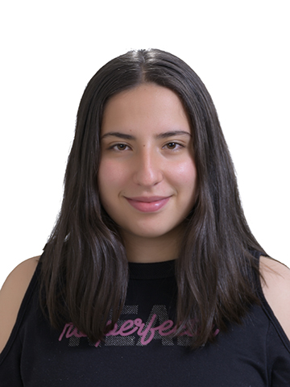

Karen Yuliana Carrillo Otálora

INFORMACION PERSONAL
✤ Nombre: Karen Yuliana Carrillo Otálora
✤ Edad: 23 años
✤ Fecha de nacimiento: 25 de octubre de 1999
✤ Lugar de nacimiento: Sogamoso-Boyacá
✤ Documento de identidad: Cédula
✤ Número de documento: 407961627
✤ LNúmero de celular: 32005478965
✤ Correo: kar2c@outlook.com
✤ Dirección: Calle 15-45/78
EDUCACIÓN
✤ Básica primaria: Colegio San Viator-Bogotá
✤ Básica secundaria: Colegio Cambridge International
✤ Universidad: Universidad de Boyacá
✤ Especialización: Universidad del externado
EXPERIENCIA
Más de 3 años de experiencia como diseñador gráfico en distintas agencias de publicidad, me han permitido desarrollar capacidades de liderazgo y manejar un equipo de hasta 5 personas para gestionar un proyecto como el de la última campaña de Suavitel Latinoamérica, ganador del tercer lugar en el Festival Internacional de la Creatividad Cannes Lion 2021. Actualmente me encuentro en la búsqueda de nuevos retos que me ayuden a demostrar mis habilidades.
GUSTOS
✤ Me gusta mucho ayudar a las personas.
✤ Me gusta realizar voluntariados de diferentes tipos.
✤ Me gusta innovar con las cosas que hago.
✤ Estoy interesada en el medio ambiente y como cuidar de este.
✤ Me gustan mucho los animales y me interesa mucho el cuidado de estos.
IDIOMAS
✤ Inglés avanzado.
✤ Francés intermedio.
✤ Italiano avanzado
✤ Mandarín básico.